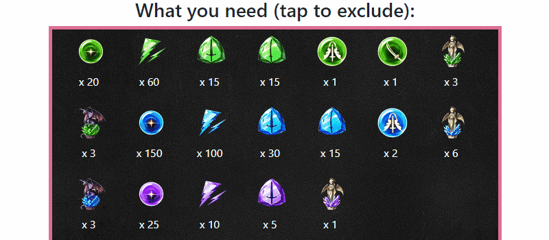

WOTV Job Material Planner
Hit me up on on Reddit if you have any questions.
HOW TO USE THIS TOOL:
Step 1: Choose the units you want to find materials for
You can do this by clicking on the portrait(s) of your unit(s). You can find them more quickly by typing their name in the search box. After choosing one, it will automatically scrolls to the next section where you can enter the starting levels and the goal levels of the unit's jobs.
If you want to choose more units, simply click on "Units" at the bottom of the screen. The 3 buttons are there to help you navigate the website more easily. Note: "Materials" and "Locations" won't work right until you have completed step 3.
You can choose up to 10 units. Choosing more will push the first unit in the queue out. If you make a mistake, you can click on the picture of the unit to remove them from the queue.
Step 2: Fill in the starting and goal levels and click CALCULATE
Enter a number between 1 and 12. There's only 1 map to farm level 13+ job materials, so those levels won't be included for now.
If you just want 1 level increases (e.g. the job is level 5 and you want to reach level 6), you can leave the goal level blank. Note: this only works BEFORE you click CALCULATE.
Click the button when you're done.
Step 3: Customize your results
The first result will be a box of all the materials and the amount that you need. If you don't need something, click on the picture to "ignore" it. The picture will be grayed out indicating that the material will not be considered (for the location tables). Click on them again to undo it.
Step 4: Enjoy the results!
You can see the best locations to farm at the "Best Location" (very creative!) table. Note that the drop rates aren't the same for each map! The same material can have a higher drop rate at a different map. This table doesn't take drop rates into consideration.
If you want to see individual materials and all their farming locations, toggle the last table on.
That's it! Now get back to farming!